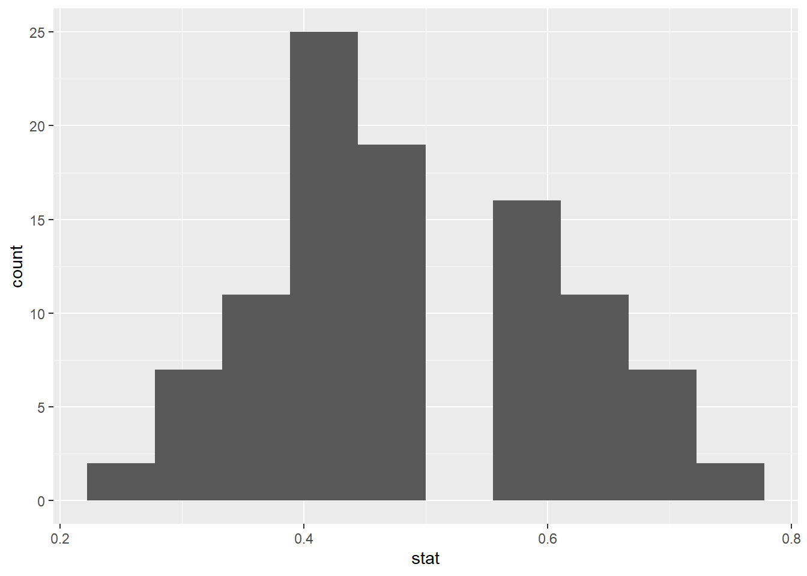
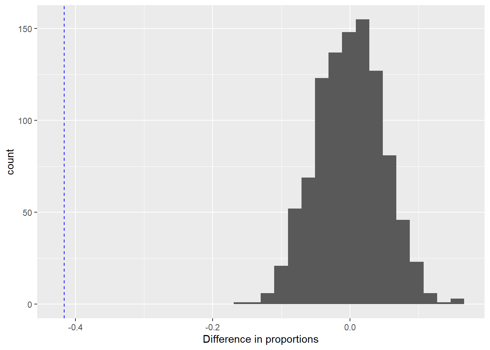
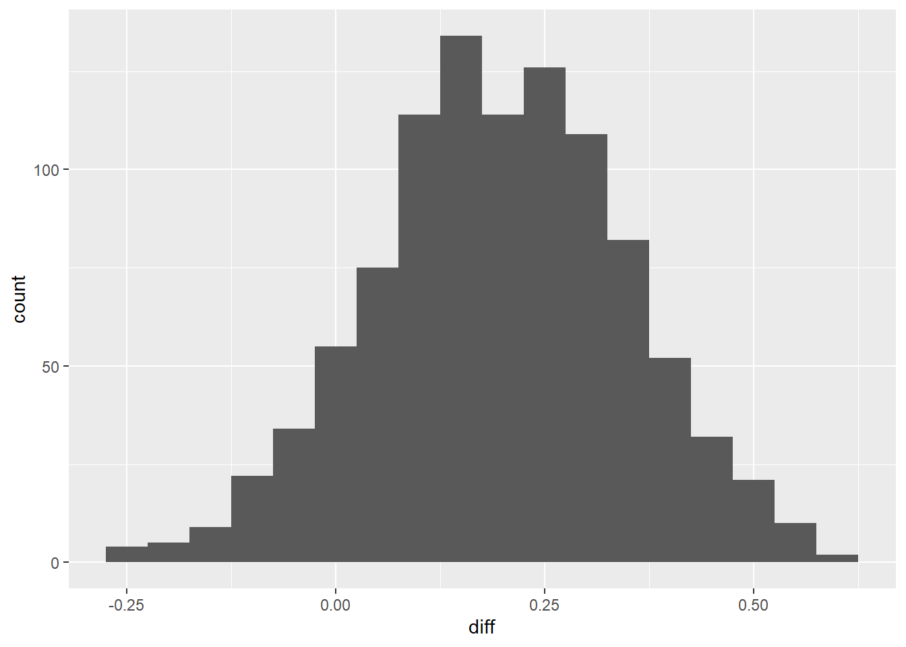

data_baby<-c(rep(1,14),rep(0,2))
obs_prop<-mean(data_baby)
obs_prop[1] 0.875So far, we’ve discussed randomization, bootstrap, and mathematical models as methods to approximate/describe a sampling distribution and quantify variability. Now, we turn to how these three methods can be used to answer research questions for different kinds of data. The appropriate method will depend on both the type of data and the research question of interest.
During our class, we’ll discuss two types of data: categorical and quantitative. Categorical data arise when the responses are categories. If you think about what is being measured on each unit in the sample, and could imagine checking a box to record the response, the data are categorical. For example:
We also have to consider the research question. The research question of interest will drive answers to the following:
The answers to these questions will help us determine which method is most appropriate, as well as the specific analysis tool to implement that method. In this unit, we’re going to focus on categorical variables. We’re going to start with a single categorical variable measured on each unit in the sample, where that categorical variable has only two possible outcomes. From there we’ll move to two categorical variables measured on each unit (one explanatory, one response), again with only two possible outcomes for each. Finally, we’ll explore categorical variables with more than two possible outcomes.
Our first scenario involves a single categorical variable measured on each unit in the sample, with only two possible outcomes.
When we discussed bootstrapping earlier, we were sampling (with replacement) from our sample data, because we wanted to understand the variability inherent to our statistic, \(\hat p\), assuming our sample is representative of all samples of the same size that could be drawn from the population. The goal of hypothesis testing is different: we want to understand the sampling distribution of \(\hat p\) under the assumption
So, we need to repeatedly sample from a population with \(p=p_0\). We can do this by simulating data sets of the same size as original sample, assuming that \(p=p_0\). This is called a parametric bootstrap, because we are making an assumption about the value of the underlying parameter \(p\) and we are assuming a particular distribution to generate our simulated data sets. From each simulated data set, we could calculate the resulting \(\hat p_{\hbox{\tiny{sim}}}\). Many simulated data sets will give us a good approximation for the distribution of \(\hat p\) under our assumptions.
Example: Back to the babies picking the good guy or bad guy. We want to know if babies are more likely to pick the good guy puppet.
Under H\(_0\), 50% of babies will pick the good guy. We’ll assume this is true for all babies that could be tested. We’ll simulate 16 babies undergoing this test to get a sample proportion from the null distribution.
Let’s see how this works in R. We’ll start by setting up the original data, so we can calculate the test statistic.
data_baby<-c(rep(1,14),rep(0,2))
obs_prop<-mean(data_baby)
obs_prop[1] 0.875Next, we’ll set up the null model with 50% successes and 50% failures:
para_boot<-c(rep(1,8),rep(0,8))
para_boot [1] 1 1 1 1 1 1 1 1 0 0 0 0 0 0 0 0Now, we’ll repeatedly sample from the null distribution, and collect the resulting \(\hat p_{pb}\) from each sample.
numsim<-100
boot.sample<-data.frame(sim=1:numsim,stat=NA)
head(boot.sample) sim stat
1 1 NA
2 2 NA
3 3 NA
4 4 NA
5 5 NA
6 6 NAfor(i in 1:numsim){
boot.sample$stat[i]<-mean(sample(para_boot,size=16,replace=TRUE))
}
head(boot.sample) sim stat
1 1 0.3750
2 2 0.7500
3 3 0.6250
4 4 0.5000
5 5 0.7500
6 6 0.5625We can plot these \(\hat p_{pb}\), and see how unusual our observed test statistic is.
library(ggplot2)
boot.hist<-ggplot(boot.sample, aes(stat)) + geom_histogram(bins=10)
boot.hist
We’ve got a plot, but how do we know exactly how many/what proportion of \(\hat p_{pb}\) were greater than our observed test statistic, \(\hat p = 0.875\)?
count<-(boot.sample$stat >= obs_prop)
sum(count)[1] 0sum(count)/numsim[1] 0So, we have an estimated p-value of
What if we want to change the number of simulated data sets? Let’s try 1000. This gives an estimated p-value of
Why is this an estimated p-value?
Why does this histogram not look bell-shaped?
Try Problem 5 in Chapter 16, and see if you can modify the Babies R code to re-create the histogram provided in the book. It might help to try the applet first and see what has to change there.
Why Bootstrap?
Works for any sample size!
Intuitive way to explain what the p-value is actually measuring.
We’ve already done these! Recall that with a confidence interval, we’re not assuming the null hypothesis is true. Rather, our goal with the bootstrap is to characterize the variability of our statistic \(\hat p\).
Sometimes, the sampling distribution of \(\hat p\) can be well-approximated using a normal distribution. The conditions which must be met are:
If these conditions are met, then
[Note: This result is just another way of stating the Central Limit Theorem when dealing with proportions! The success/failure condition is playing the role of the “sample is large enough” requirement of the CLT.]
Let’s think more about the standard error of \(\hat p\). Remember the standard error is
But this presents a problem. We don’t know \(p\) (if we did, we wouldn’t be doing tests or confidence intervals)!
How is this going to play out in hypothesis tests?
Example: Look at Problem 3 in Chapter 16. The journalist claims more than 1/5 adults living in Seattle support defunding the police. Is this true?
To find the p-value, we can use R.
normTail(m=0,s=1,U=2.79)
pvalue<-1-pnorm(2.79,mean=0,sd=1)
pvalue[1] 0.002635402Do you expect the p-value from the parametric bootstrap would be similar? Why or why not?
Let’s see.
How is this going to play out in confidence intervals?
Example: Back to Chapter 16, problem 3. The journalist found that 159/650 Seattle residents support proposals to defund the police.
We can change the confidence level by changing \(z^*\), and using the qnorm function.
qnorm(0.05,mean=0,sd=1)[1] -1.644854Back to the bootstrap confidence interval…
So far, we’ve seen bootstrap percentile confidence intervals. We calculated these directly from the bootstrapped \(\hat p_{\hbox{\tiny{boot}}}\). If we want a 90% confidence interval, we can find the 5\(^{th}\) and 95\(^{th}\) percentile values of the \(\hat p_{\hbox{\tiny{boot}}}\) values.
We can also use the variability of the \(\hat p_{\hbox{\tiny{boot}}}\) to calculate an estimate of the standard error of \(\hat p\), and then calculate the interval using the mathematical model approach. This is a bootstrap SE confidence interval.
This is a rough approximation, using the 68-95-99.7 Rule which says that 95% of the observed differences should be no farther than 2 SE from the true parameter (\(p\)). To do this, the bootstrap histogram must be roughly symmetric and bell-shaped. So, it works for Chapter 16, problem 3; it doesn’t work with the babies.
Why Z-Test/Z Confidence Intervals?
We now move on to consider situations in which two categorical variables are measured on each unit in the sample, and each variable has two possible values. In cases like these, typically one variable is considered the response and one variable is considered explanatory. The explanatory variable may be randomly assigned (like whether or not a subject swam with dolphins) or it may be merely observed (like smoking status). The two possible values of the explanatory variable lead to two groups, and we’re interested in comparing the population proportions that arise from these two groups. We’ll focus on the function of parameters \(p_1 - p_2\). The natural estimate of this is \(\hat p_1 - \hat p_2\): the difference in the sample proportions. We’ll be constructing hypothesis tests to compare \(p_1\) to \(p_2\) and finding confidence intervals to estimate \(p_1 - p_2\).
Example: Researchers are interested whether electrical brain stimulation will help with problem solving tasks. 40 volunteers were all trained to solve problems in a particular way. Half of the volunteers were randomly assigned to receive electrical stimulation and the other half received a sham stimulation (placebo). All volunteers were then presented with an unfamiliar problem and asked to solve it. The researchers are interested in testing whether the proportion able to solve the problem following electrical stimulation is greater than the proportion able to solve the problem without electrical stimulation.
There are a couple of different ways we could state the hypotheses of interest:
Recall that hypothesis tests work by assessing how unusual our observed data are, if the null hypothesis is really true. A very unusual result implies that observed data are not likely to have occurred under the null hypothesis. Randomization tests allow us to assess that unusualness by estimating the null distribution–a simulated distribution of what we could expect the distribution of \(\hat p_1 - \hat p_2\) to look like if H\(_0\) is true. We assume H\(_0\) is true by recreating the randomization that occurred in the experiment.
Here are the data:
| Solved | Not Solved | Total | |
|---|---|---|---|
| Sham | 20 | ||
| Electrical | 20 | ||
| Total | 40 |
To demonstrate what the randomization test is doing, we need 40 cards. Why 40?
Of these cards, how many should be red and how many should be black? What do these represent?
We’ll shuffle, and deal into two stacks.
A randomization test is going through this shuffling/dealing over and over again, find the difference in proportions for each simulation.
Let’s look at this in the applets.
What do you notice about the null distribution? How unusual is the observed \(\hat p_1 - \hat p_2\)?
Example: Try Problem 2 in Chapter 17. Set up the hypotheses and describe how a randomization test would work.
Let’s do this in R!
First, we’ll need to set up the data. This is honestly the hardest part.
VM<-data.frame(Treatment="Vaccine",Response="Malaria",obs=1:89)
head(VM) Treatment Response obs
1 Vaccine Malaria 1
2 Vaccine Malaria 2
3 Vaccine Malaria 3
4 Vaccine Malaria 4
5 Vaccine Malaria 5
6 Vaccine Malaria 6VN<-data.frame(Treatment="Vaccine",Response="NoMal",obs=1:203)
CM<-data.frame(Treatment="Control",Response="Malaria",obs=1:106)
CN<-data.frame(Treatment="Control",Response="NoMal",obs=1:41)
malariadf<-rbind(VM,VN,CM,CN)
head(malariadf) Treatment Response obs
1 Vaccine Malaria 1
2 Vaccine Malaria 2
3 Vaccine Malaria 3
4 Vaccine Malaria 4
5 Vaccine Malaria 5
6 Vaccine Malaria 6Next, we’ll calculate the observed difference in the proportion of children who contracted malaria between those who received the vaccine and those who received the control. To use the diffmean function, we need to load the mosaic package.
observed<-diffmean(Response == "Malaria" ~ Treatment, data=malariadf)
observed diffmean
-0.4162939 Now, we need to shuffle the vaccine/control treatment labels many times and calculate the difference in proportions of malaria for each shuffle. To do this, we’ll need the mosaic library but it’s already been loaded.
malaria.null<-do(1000)*diffmean(Response == "Malaria" ~ shuffle(Treatment),data=malariadf)
head(malaria.null) diffmean
1 0.013255987
2 0.033710745
3 0.003028609
4 -0.068563042
5 -0.048108284
6 -0.007198770We’ll plot the null distribution, and to do this we’ll need the ggplot2 library.
library(ggplot2)
ggplot(data=malaria.null) + geom_histogram(mapping=aes(x=diffmean)) +
xlab("Difference in proportions") +
geom_vline(xintercept = observed, linetype=2, color="blue")`stat_bin()` using `bins = 30`. Pick better value with `binwidth`.
Finally, we can calculate the p-value by observing how unusual the observed difference in the proportions of malaria is under the null hypothesis.
prop(~diffmean <= observed, data=malaria.null)prop_TRUE
0 Why are we considering less than or equal to be more extreme in this example?
As we saw with a single proportion, bootstrapping will allow us to estimate the variability of \(\hat p_1 - \hat p_2\) without assuming the null hypothesis is true. With a single proportion, we drew repeated samples (with replacement) from our sample data, and from each bootstrap sample calculated \(\hat p_{\hbox{\tiny{boot}}}\). The distribution of the \(\hat p_{\hbox{\tiny{boot}}}\) provided an estimation of the sampling distribution of \(\hat p\).
Now, with two samples, our observed statistic of interest is
Let’s go to R, and see how this works with the electrical stimulation example. We’ll start by setting up the data and calculating the observed difference in proportion of solved problems between electrical stimulation and control.
#original Sample 1 data (Electrical), creating a data set with 10 S (1) and 10 F (0)#
electrical<-c(rep(1,10),rep(0,10))
#original Sample 2 data (Control), creating a data set with 6 S (1) and 14 F (0)#
control<-c(rep(1,6),rep(0,14))
#Calculate and print the observed statistic, p-hat_E - p-hat_C#
obs_stat<-mean(electrical)-mean(control)
obs_stat[1] 0.2Now, we’ll repeatedly sample with replacement separately from each group. First we need to set up a place to store our summaries from each resample.
#Set up an empty data set with 4 columns: sim number, p_hat_boot_E, p_hat_boot_C, diff#
boot.samples<-data.frame(sim=1:1000,stat_E=NA,stat_C=NA, diff=NA)
head(boot.samples) sim stat_E stat_C diff
1 1 NA NA NA
2 2 NA NA NA
3 3 NA NA NA
4 4 NA NA NA
5 5 NA NA NA
6 6 NA NA NA#For each row in the data set, draw a bootstrap sample from Sample 1 and Sample 2 and find#
# p_hat_boot_E and p_hat_boot_C #
for(i in 1:1000){
boot.samples$stat_E[i]<-mean(sample(electrical,size=20,replace=TRUE))
boot.samples$stat_C[i]<-mean(sample(control,size=20,replace=TRUE))
}
head(boot.samples) sim stat_E stat_C diff
1 1 0.40 0.25 NA
2 2 0.45 0.20 NA
3 3 0.60 0.40 NA
4 4 0.35 0.35 NA
5 5 0.35 0.15 NA
6 6 0.50 0.30 NA#Now find the differences#
boot.samples$diff<-boot.samples$stat_E - boot.samples$stat_C
head(boot.samples) sim stat_E stat_C diff
1 1 0.40 0.25 0.15
2 2 0.45 0.20 0.25
3 3 0.60 0.40 0.20
4 4 0.35 0.35 0.00
5 5 0.35 0.15 0.20
6 6 0.50 0.30 0.20Now let’s plot the bootstrap distribution.
boot.hist<-ggplot(boot.samples, aes(diff)) + geom_histogram(binwidth=0.05)
boot.hist
Notice where this distribution is centered!
We are re-using this example, since we’ve already carried out the randomization test in the applet. By doing so we are ignoring (maybe) the research question. But, we’re doing both a randomization test and confidence interval so that we can compare the resulting sampling distributions of \(\hat p_1 - \hat p_2\). What is different? What’s the same?
Now that we have the bootstrap distribution, we can find the bootstrap percentile confidence interval. Let’s do a 90% interval.
#start by ranking the bootstrap differences from smallest to largest #
rankdiff<-sort(boot.samples$diff)
#Print out just the first few#
head(rankdiff)[1] -0.35 -0.20 -0.20 -0.20 -0.20 -0.20#Lower endpoint is the 5th percentile (90% confidence)#
lower<-rankdiff[50]
lower[1] -0.05#Upper endpoint is the 950th percentile (90% confidence)#
upper<-rankdiff[950]
upper[1] 0.45
Because our bootstrap distribution is relatively bell-shaped, we could also a calculate a rough 95% boostrap SE confidence interval.
SE<-sd(rankdiff)
SE[1] 0.1542495
For a single proportion, we needed two conditions to be met to ensure the sampling distribution of \(\hat p\) is approximately normal:
If these conditions are met, then
We must meet similar conditions to ensure the sampling distribution of \(\hat p_1 - \hat p_2\) is approximately normal:
If these conditions are met, then
Like before we don’t know \(p_1\) and \(p_2\), so we’ll use our best guess. And, like before, our best guess will change depending on whether we’re constructing a confidence interval or carrying out a hypothesis test.
How is this going to play out in a hypothesis test?
Example (17.5): (Aside: why can’t we do the electrical stimuation example again?). A 2021 Gallup poll surveyed 3941 students pursuing a bachelor’s degree and 2064 students pursuing an associate’s degree. The survey found that 51% of the bachelor’s students (2010) and 44% of the associate’s students (908) said that COVID-19 will negatively impact their ability to complete the degree. We want to decide whether the proportion of bachelor’s students who believe the pandemic will negatively impact degree completion is different from the proportion of associate’s students who believe they will be negatively affected. Let \(p_B\) be the proportion of bachelor’s students who believe they’ll be negatively affected and let \(p_A\) be the proportion of associate’s students who believe they’ll be negatively affected.
To visualize the p-value:
normTail(m=0,s=1,L=-5.15, U=5.15)
And to get the p-value:
pnorm(-5.15,mean=0,sd=1)+(1-pnorm(5.15,mean=0,sd=1))[1] 2.604865e-07
How is this going to play out in a confidence interval?
Example(17.9): A Kaiser Family Foundation poll for US adults in 2019 found that 79% of Democrats, 55% of Independents, and 24% of Republicans supported a generic “National Health Plan.” There were 347 Democrats, 298 Republicans, and 617 Independents surveyed (Foundation, 2019). We want to estimate the difference between the proportion of Democrats and Independents who support a National Health Plan.
What impacts the width of a confidence interval?
There are three main things that impact the width of a confidence interval:
No matter what method we use to calculate the confidence interval, the confidence level is a statement about the long run percentage of confidence intervals that would succeed in capturing the true value of the parameter. What does this mean? Applet
Hypothesis tests vs. Confidence Intervals
While we should be matching analysis method to the research question, there is a nice relationship between hypothesis tests and confidence intervals. Recall that confidence intervals give a set of plausible values for the unknown parameter.
So far, we’ve considered categorical variables with only two possible outcomes: success and failure. Many categorical variables have more than two possible outcomes, so we can’t easily define the proportion of “successes.” Instead, we’ll summarize categorical data with more than two levels using two-way tables. In this class, we’re still going to restrict ourselves to only two variables (often explanatory and response, but not necessarily), both with two or more levels. However, there are certainly statistical methods for more complicated situations.
Typically, research questions focus on how the proportions of the possible outcomes in the response variable change (or don’t) across the levels of the explanatory variable. However, we can also consider questions about a single variable with more than two outcomes (are the possible outcomes all equally likely? do the possible outcomes follow a particular pattern?) or just whether the two categorical variables are independent or dependent without assigning an explanatory/response relationship. Due to the structure of the variable(s), there really isn’t a population parameter of interest. We can’t (usually) make a function of proportion of successes that makes sense to estimate, like we can with \(p_1 - p_2\). That means we’ll be considering only tests, not confidence intervals. We’ll focus on the randomization test and the mathematical model approach. Both methods start with the same set-up.
Example: When surveys are administered, we hope that the respondents give accurate answers. Does the mode of survey delivery affect this? Schober et al (2015) investigated this question. They had 147 people who agreed to be interviewed on an iPhone, and they were randomly assigned to one of three interview modes: human voice, automated voice, text. One question asked was whether they exercise less than once per week during a typical week (a yes is mostly likely considered socially undesirable). The explanatory variable here is survey mode and the response is whether or not the respondent said yes. Here are the data:
| Text | Human Voice | Automated Voice | Total | |
|---|---|---|---|---|
| Exercise Yes | 34 | 21 | 20 | 75 |
| Exercise No | 124 | 139 | 139 | 402 |
| Total | 158 | 160 | 159 | 477 |
Based on these data, it looks like the answer to the question does change depending on survey mode, with respondents more likely to say yes via text. However, we don’t know if this result could have happened by chance.
We don’t expect the proportion of `yes’ to be exactly the same across all survey modes, but we want to know if these vary enough to convince us that survey mode and answer are not independent. To do this, we need to find for each cell in the table.
Again, here are the observed data
| Text | Human Voice | Automated Voice | Total | |
|---|---|---|---|---|
| Exercise Yes | 34 | 21 | 20 | 75 |
| Exercise No | 124 | 139 | 139 | 402 |
| Total | 158 | 160 | 159 | 477 |
| Text | Human Voice | Auto Voice | Total | |
|---|---|---|---|---|
| Exercise Yes | 34 (_____) | 21 (_____) | 20 (_____) | 75 |
| Exercise No | 124 (_____) | 139 (_____) | 139 (_____) | 402 |
| Total | 158 | 160 | 159 | 477 |
So now the key question…are the observed and expected cell counts different enough?
New test statistic!
In our example:
To see if this is ‘big’ we need the sampling distribution of our new test statistic. We can estimate that sampling distribution using either a randomization test or the mathematical model approach.
The randomization test for a two-way table works just like it does with two samples. We’ll randomize by shuffling and dealing/assigning the 75 yes answers and 402 no answers to the three survey modes at random.
Conclusion:
Based on what we just observed in the applet, the normal distribution is not going to be a good approximation to sampling distribution. It turns out this test statistic follows a different mathematical distribution, the chi-squared distribution (proof: see STAT 462). The normal distribution has two parameters that determine its shape: the mean (\(\mu\)) and standard deviation (\(\sigma\)). The shape of the chi-square distribution is determined by a parameter called the . Figure 18.2 on page 307 shows how the shape of the distribution changes depending on the df.
So how can we use this?
Again, we have conditions that need to be met for the mathematical model to be a good approximation:
Example: Let’s go back and do the survey mode example using the mathematical model approach. First, we’ll need to check the conditions are met:
To find the p-value, we can use the R function pchisq(). Like pnorm it gives area to the left. So,
pchisq(6.1971,df=2,lower.tail=FALSE)[1] 0.04511457We can also do this directly in R.
surveymode<-read.csv("surveymode.csv",header=TRUE)
#make a table#
mode<-table(surveymode$Response,surveymode$Mode)
#see the table, note alphabetical order#
mode
Avoice Hvoice Text
No 139 139 124
Yes 20 21 34#Chi-square mathematical model test#
chisq.test(mode)
Pearson's Chi-squared test
data: mode
X-squared = 6.0069, df = 2, p-value = 0.04962#Chi-square randomization test#
chisq.test(mode,simulate.p.value=TRUE, B=1000)
Pearson's Chi-squared test with simulated p-value (based on 1000
replicates)
data: mode
X-squared = 6.0069, df = NA, p-value = 0.05095